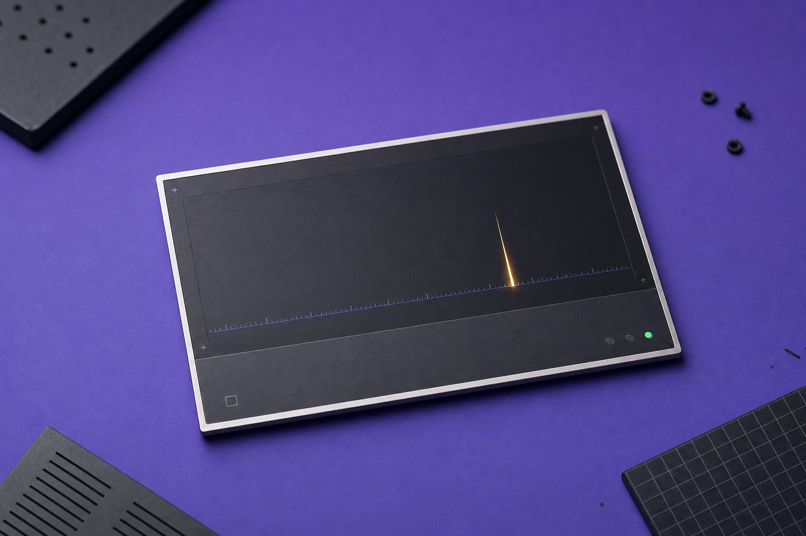
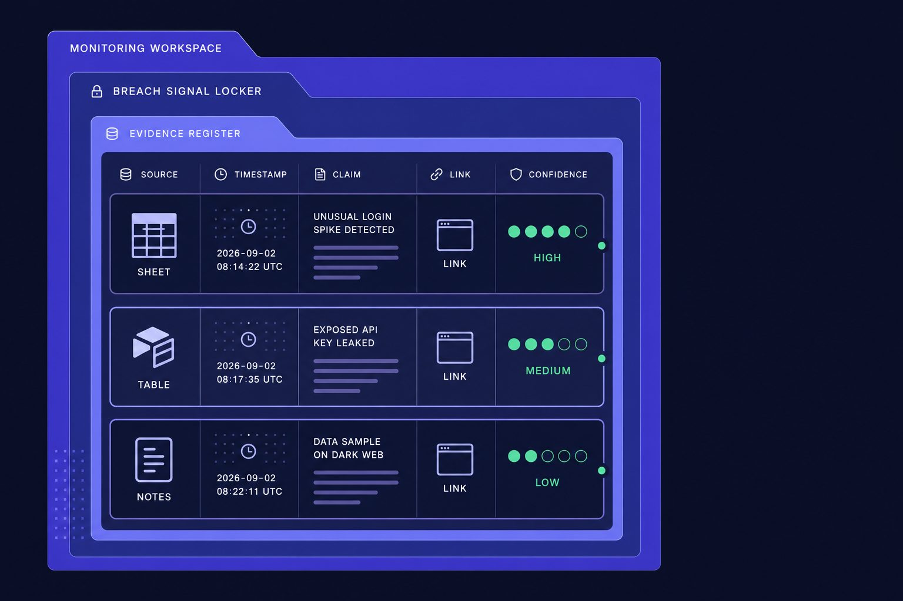
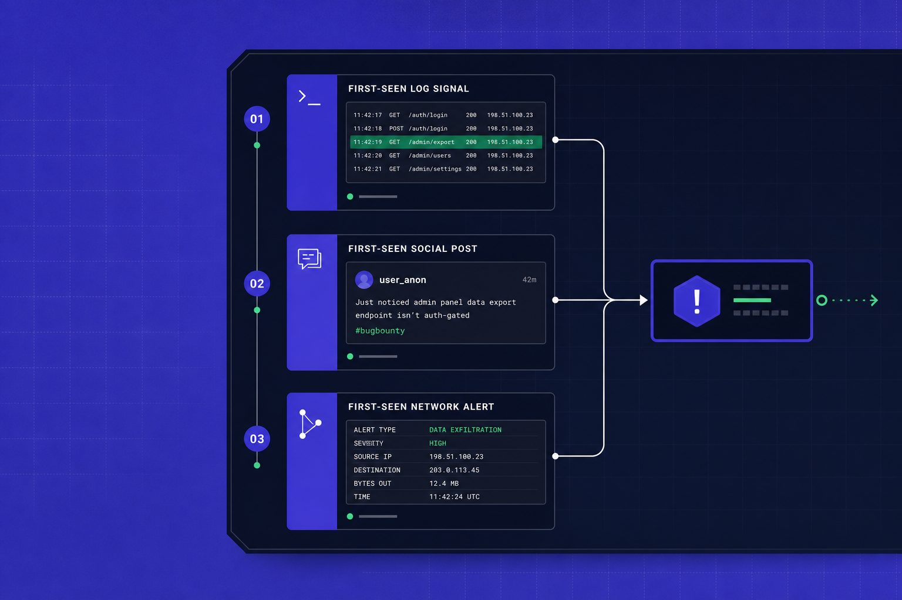
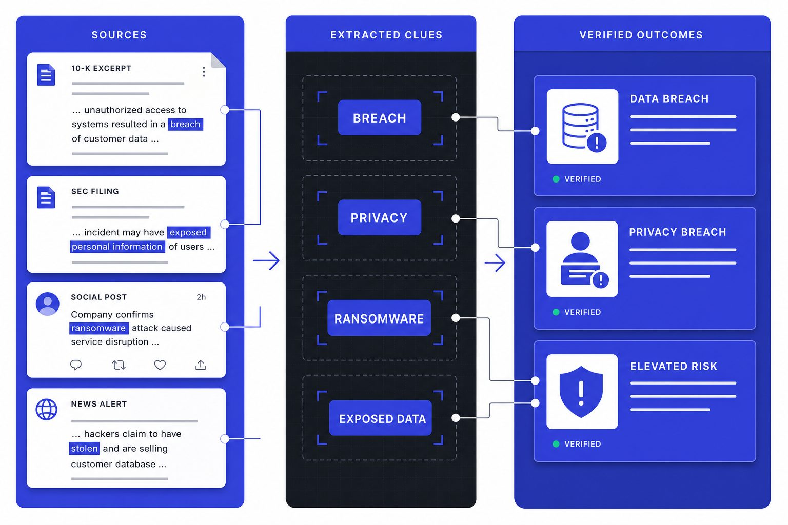
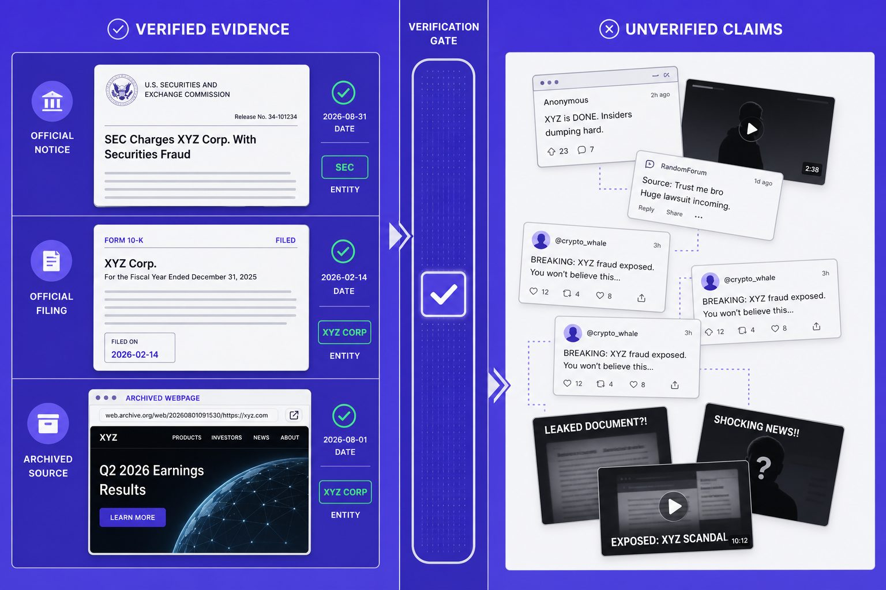

Cybersecurity Guides
How to Read Early Data Breach Signals Without Hype

How do you spot a real data breach before the company says a word? The answer is not speed. It is signal quality. Early clues often surface in public filings, regulator notices, threat intelligence posts, and security advisories long before headlines catch up. According to Data Breach Disclosure Monitoring: Track Vendor Breach Notices | PageCrawl.io, automated monitoring can detect breach disclosures up to 100x faster than manual checks. But faster alerts do not make every report credible. This guide shows you how to build a clear workflow, check source quality, score evidence, and avoid false alarms. By the end, you will have a repeatable process. You will know when a possible incident deserves monitoring, escalation, or a hard pass.
Table of Contents
Prerequisites for Tracking Data Breach Signals

Start by building one monitoring workspace for every possible data breach clue. Use a spreadsheet, Airtable base, or notes database. Think of it like an evidence locker. Each row should hold the source, timestamp, claim, link, and your confidence score.
Tools and accounts to set up first
Create your watchlist before you monitor anything. Add target companies to SEC EDGAR alerts, bookmark state attorney general pages and breach portals, and subscribe to vendor security advisory feeds.
1. Add target companies to SEC EDGAR alerts.
2. Bookmark state attorney general pages and breach portals.
3. Subscribe to each vendor security advisory feed.
4. Follow a small threat intelligence list on RSS or X.
5. Create Google Alerts for company names plus “cyber incident.”
6. Build a simple log with columns for filing, regulator notice, advisory, claim, and evidence link.
For example, if a cloud vendor posts a new security advisory, you should log the time, affected product, and original URL. You should now have one place that captures filings, notices, claims, timestamps, and links.
What background knowledge you need
Learn the basic signal types before you begin.
1. Know how SEC filings describe material cyber events.
2. Recognize what a regulator notice confirms.
3. Separate rumor from sourced threat intelligence.
4. Read vendor language for scope, impact, and fix status.
5. Score each source from 1 to 5.
Use 1 for anonymous claims. Use 5 for primary evidence. For example, an agency bulletin ranks above a reposted screenshot. At this point, your process should reduce misinformation and flag likely ransomware or privacy breach claims faster.
What success looks like before you begin
Verify that your watchlist includes at least 10 trusted sources. Include EDGAR, two regulator pages, three vendor feeds, three threat intelligence accounts, and one search alert. According to Data Breach Disclosure Monitoring: Track Vendor Breach Notices | PageCrawl.io, free page monitoring can start at $0. You should now have a template ready for logging every possible signal.
Step 1 Build a Data Breach Source Map

Map each source to the signal it shows first. Think of this like sorting smoke, fire, and witness reports. Your goal is not speed alone. Your goal is clean evidence for a possible data breach.
1. Company filings and investor disclosures
Start with company-controlled records. Review 8-K filings for material incident updates. Review 10-K risk factors for weak spots, such as third-party access or prior security gaps. Check investor pages and press releases for carefully worded incident language.
For example, a firm may first mention “unauthorized access” in a press release, then add scope later in a filing. That makes the filing stronger confirmation. It also answers a common question: companies do not always disclose a breach first in one place. They may signal it through investor relations, then formalize it in SEC material.
Your source list should rank each entry by strength. Check that it shows whether each is a formal filing, a press release, or a general risk disclosure.
2. Regulator notices and enforcement pages
Check regulator pages next. Review state attorney general breach notices, SEC statements, and enforcement releases. These sources often confirm dates, affected groups, and whether notice duties were triggered.
Use them as independent evidence. For example, a company may stay vague, while a state notice names resident impact and timing. This document-first approach applies across domains - whether you're tracking breach notices or researching cryptocurrency market news, original sources beat secondhand summaries.
You should now see which regulator sources can confirm an event. Verify that you logged the publishing agency, date, and exact claim before proceeding.
3. Threat intelligence posts and ransomware leak sites
Treat ransomware posts as leads, not proof. A leak site can show a victim name, sample files, or countdown timers. That can indicate pressure activity, but it does not confirm full compromise, real data exposure, or current ownership of stolen files.
Document each claim with care. Save timestamps, quoted text, and any posted samples. Then check whether a trusted threat intelligence source preserved or analyzed the claim. If a post disappears later, your notes still hold the trail. For a related case study, see France Tax Hack: 678,000 Taxpayers’ Data Stolen.
For a visual walkthrough of this process, check out this tutorial from The CISO Signal:
You should now understand the limit of attacker claims. Verify that no ransomware post on your list is marked as primary evidence by itself.
4. Security advisories from vendors and agencies
Review CISA alerts, vendor advisories, and product bulletins last. These sources rarely name every victim first. They often reveal active exploitation, affected versions, and urgent patch guidance first. That makes them strong context, not always direct confirmation.
For example, a vendor advisory may explain the exact flaw attackers used. According to Data Breach Disclosure Monitoring: Track Vendor Breach Notices | PageCrawl.io, basic monitoring can start at $8, which shows how cheap systematic tracking can be. Remember to apply the labeling system you established earlier: mark this vendor advisory as primary evidence, secondary reporting, or unverified claim based on its origin and verification status.
Step 2 Read Threat Intelligence and Privacy Breach Clues

In this step, you will pull concrete signals from filings and posts. Do not react to vague cyber language. Isolate wording that suggests a data breach, a privacy breach, ransomware, or only elevated risk.
Language in filings that signals elevated cyber risk
Scan each filing for precise phrases, not broad caution text. Focus on terms like "unauthorized access," "material incident," "systems disruption," "third-party compromise," "customer notification," "extortion demand," or "law enforcement contact." Those phrases often move a filing from routine risk language to incident-linked language.
For example, "we continue to assess a cybersecurity event" is weak alone. "We identified unauthorized access to customer data" is much stronger. "We engaged outside counsel and forensic experts" also matters, because companies usually add that line after a real event.
Use this quick review process:
1. Highlight every sentence that names an event.
2. Mark who was affected, if stated.
3. Note whether the company mentions data, systems, vendors, or payments.
4. Record the filing date and any update language.
You should now have a short list of quoted phrases worth tracking. Verify that each note ties to exact wording before proceeding.
Red flags in regulator notices and consumer alerts
Read regulator notices like a claims adjuster reads a police report. You want facts, dates, and duties. Strong clues include notice deadlines, resident counts, mailing plans, credit monitoring offers, and references to state breach laws.
This is how you separate a privacy breach from a generic warning. A privacy breach usually includes personal data exposure, notice obligations, or affected individuals. A generic security warning often discusses risk, attempted intrusion, or service hardening without saying data left company control.
For example, a consumer alert that says names and Social Security numbers "may have been accessed" points toward a real incident. A notice about "increased phishing activity targeting customers" does not confirm one. See how concrete victim language changes the signal. A 2017 CNBC investigation revealed that Uber knew about a data breach for more than a year before publicly disclosing it, demonstrating why timestamped records matter (CNBC).
For a visual walkthrough of the consumer response side, check out this tutorial from Aura:
At this point, your notes should show whether the notice describes exposed personal information or only increased risk. Verify that you can point to one sentence proving your label.
How to read threat intelligence posts without overclaiming
Treat threat intelligence posts as leads first. Do not treat screenshots, dark web claims, or actor boasts as proof. Ask four questions: Who posted it? What evidence appears? When was it posted? Has any primary source matched it?
For example, a researcher may post that a ransomware group listed a company on its leak site. That is a useful clue, but not confirmation. A post becomes stronger when it includes victim naming, file samples, hashes, or matching outage reports. If you want a case study mindset, review coverage like DentaQuest Breach: 15 Million Patients Hit - 2026’s Largest.
You should now see which posts are evidence-backed and which are noise. Verify that no entry in your log relies on one anonymous claim alone.
How to score signal strength and timing
Score each signal with a simple three-part label: weak, moderate, or strong. Use source quality, specificity, recency, and corroboration as your criteria.
1. Score weak when the source is indirect and vague.
2. Score moderate when details exist but confirmation is limited.
3. Score strong when primary records and outside evidence align.
For example, an SEC filing plus a state notice is strong. A leak-site post plus a service outage is moderate. A broad security advisory alone is weak. According to PageCrawl.io, breach notice monitoring can start at $80 per year, which shows how low-cost tracking can still surface useful timing clues.
You should now have a ranked signal list with short notes. Verify that every item shows incident type, date, source, and why you scored it that way.
Verify a Possible Data Breach and Avoid Misinformation

This step turns scattered signals into a usable judgment. Your goal is not to be first. Your goal is to decide whether the evidence supports a credible data breach assessment. Make that call before you share it, publish it, or escalate it. That discipline protects your readers, your team, and your own credibility.
Start by checking the basics with zero assumptions. Confirm the date on every filing, post, notice, and advisory. Match the legal entity name, not just the brand name. A parent company, subsidiary, vendor, or business unit can change the meaning of a claim fast. Then compare the current version of a page or notice against archived versions. A quiet edit can matter as much as the original post.
Next, separate repetition from confirmation. If five accounts repeat the same claim, you still may have only one weak source. Trace each statement back to its first appearance. Identify whether later posts add new proof or only copy earlier wording. Give more weight to signed filings, regulator notices, court records, customer notices, and vendor advisories. Give less weight to anonymous screenshots, cropped images, recycled forum posts, and unsourced summaries.
After that, split direct evidence from interpretation. Direct evidence includes breach notices, official disclosures, regulator filings, named victim statements, and technical indicators tied to a known incident. Interpretation includes guesses about scope, cause, attacker identity, or stolen data volume. Keep those categories apart in your notes. If ransomware is mentioned, verify whether the claim points to encryption, extortion, data theft, or all three. If a privacy breach is alleged, confirm whether the evidence shows exposed personal data or only a service disruption.
Build a short evidence summary before you move forward. State what happened, who may be affected, when the signal appeared, and which primary sources support it. Add a confidence label such as low, medium, or high. List the open questions that still block a firm call. Then define the exact trigger for your next move. For example, continued monitoring may depend on a regulator update, a customer notification, a new 8-K, or a security advisory that confirms active exploitation.
You should now have a tighter conclusion for every case. At this point, your notes should lead to one of three clear outcomes. First, monitor only when the signal is thin, indirect, or stale. Second, label it a likely incident awaiting confirmation when credible clues exist but primary evidence is still incomplete. Third, treat it as a credible incident when primary evidence supports the claim and the timeline holds together. Verify that each case ends in only one of those buckets before proceeding.
The key lesson is simple. Strong early reporting on a possible data breach depends on restraint, structure, and source discipline. When you confirm dates, match entities, check archives, and isolate speculation, you reduce noise and improve judgment. Use that workflow every time, and you will make better decisions about when to watch, when to escalate, and when to report.
Keep refining your process, because better verification will matter even more as threat intelligence spreads faster. Want to learn more? Learn More to explore how we can help.